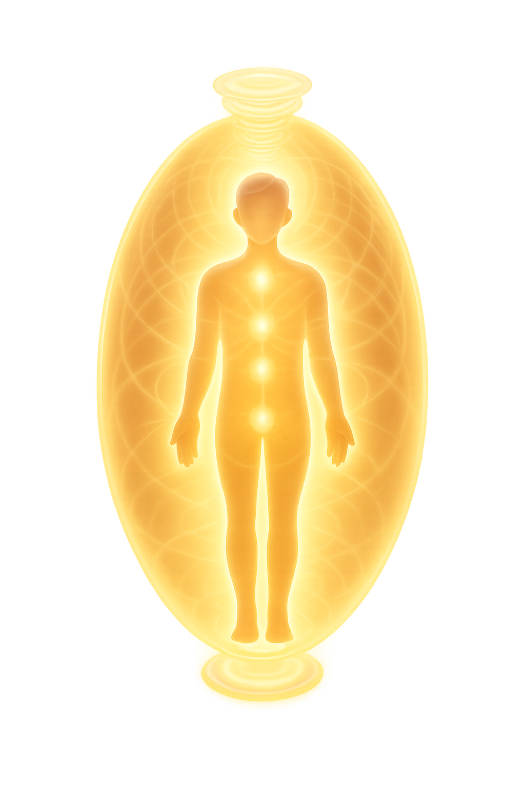

See the Color of Your Soul with Aura Reading Online
Aura reading at Neuro invites you back to your natural, intuitive state. Through color, feeling, and subtle perception, our psychic reveals what surrounds you and what belongs to shift. Your aura is speaking. Let us help you listen.

Veronika
4.8tarot reader
online
9 years of experience
16752 consultation done
The main goal of my work is to help find answers to tormenting questions, understand and love yourself and the world, live in harmony and pleasure. And also to maintain a connection with your Higher Self, to be able to live ...
The main goal of my work is to help find answers to tormenting questions, understand and love yourself and the world, live in harmony and pleasure. And also to maintain a connection with your Higher Self, to be able to live ...
The main goal of my work is to help find answers to tormenting questions, understand and love yourself and the world, live in harmony and pleasure. And also to maintain a connection with your Higher Self, to be able to live ...
The main goal of my work is to help find answers to tormenting questions, understand and love yourself and the world, live in harmony and pleasure. And also to maintain a connection with your Higher Self, to be able to live ...
The main goal of my work is to help find answers to tormenting questions, understand and love yourself and the world, live in harmony and pleasure. And also to maintain a connection with your Higher Self, to be able to live ...
The main goal of my work is to help find answers to tormenting questions, understand and love yourself and the world, live in harmony and pleasure. And also to maintain a connection with your Higher Self, to be able to live ...
”The psychic reading on the Neuro website was exactly what I needed. It helped me to learn how to trust myself more.
MMax
”This Nebula horoscope was quite spot-on, which I didn’t expect! I rarely leave reviews, but I couldn’t not do it here. Loved the experience!
EEva
”The session I had turned out to be very reassuring for me. I was struggling with my confidence, and it helped quite a bit.
Your Aura Reading: What You’ll Discover
✦
Your Light
Each shade holds truth. Your aura can show the emotional tone you carry and the strength already present around you.
✦
The Unseen
We help name what’s subtle: fatigue, fear, longing, joy, or pressure that you may feel but not yet understand.
✦
A Shift
Realignment is real. A reading can point to what needs release so your energy feels lighter and more honest.
✦
The Insight
The reading ends with guidance you can hold onto: a clearer sense of where your field is asking you to go next.
Signs You May Need an Aura Reading
✦
You Feel “Off” Without Knowing Why
Nothing’s wrong exactly, but your energy feels heavy or scattered. Aura reading helps name the pressure you cannot quite explain.
✦
You’re At a Crossroads
Before choosing, it helps to understand what your field is already showing about fear, desire, and readiness.
✦
You’re Emotionally Drained
Your field can carry what the mind tries to ignore. A psychic aura reading helps you see what needs care.
✦
You’re Starting Something New
A fresh chapter changes your energy. Reading aura colors can help you step into it with better awareness.
Frequently Asked Questions
An aura reading is an intuitive session that explores the color, tone, and emotional quality of the energy around you.
You choose an advisor, ask your question, and receive guidance based on the subtle impressions and energetic patterns they perceive.
Costs vary by reader, but Neuro keeps pricing visible before you start so you can choose a session that fits your needs.
Aura colors can point to emotional states, strengths, stress, openness, or change. Meaning depends on the whole reading, not one color alone.
Aura reading is for anyone who wants clearer language for what they feel and practical insight into their current inner state.
Neuro connects you with online psychics who can guide you through aura insights in a simple, private, and accessible format.
Some people consider an aura reading when they feel emotionally unsettled or unclear. Maybe when you pace through your day, you feel an itch inside and think, is there something to explore? How do I name it? You might have a dozen words for stress, but none for the energetic weight behind it.
Online psychics at Neuro help you explore what your aura may be showing through color, feeling, and intuitive perception. The reading turns subtle impressions into words you can use in everyday life.
When it's hard to put your finger on what's going on inside, it's not an uncommon thing to feel. Simple things might feel a little more labored than they used to be. Decisions might take a little more energy out of you than expected.
The concept of aura colors meaning blends ancient wisdom with intuitive energy work to help you better understand yourself, your emotions, and reasons behind your decisions. An aura reading online is a guided encounter with what has been quietly surrounding you.
For new customers, we offer to try any reading for the first three minutes free, and additionally give an 80% discount. This is a great way to find out if you're interested and chat with an experienced psychic without pressure.